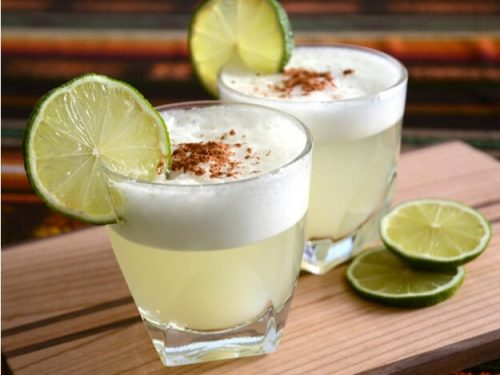
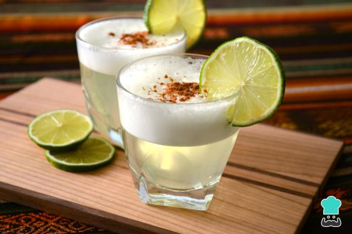

El pisco se preparó por primera vez en 1920 en el “Morris bar” del histórico Jirón de la unión de Lima.
El pisco real está hecho a base de uva quebranta destilada, que, curiosamente es una variedad de uva que
proviene de dos uvas españolas importadas a Perú por unos monjes, El nivel de este alcohol, del pisco, es de una
calidad al nivel que los whiskies, tequilas o rones de las mejores categorías y justamente a base de este licor
se prepara el famosísimo Pisco Sour, ya solo su nombre lo hace apetecible. A pesar de que el “Morris bar” se cerró
en 1929 esto no impidió que el cóctel se viralizara mundialmente y evolucionara hasta cómo lo conocemos hoy tras ir
mejorando su receta poco a poco añadiéndole clara de huevo, amargo de angostura y convirtiéndolo así en Patrimonio
cultural de la nación. Vaya, que el Pisco es una institución. El nombre nace cuando se decide juntar las palabras
pisco y sour, esta última a lo que se refiere es a los cócteles acompañados por limón.
